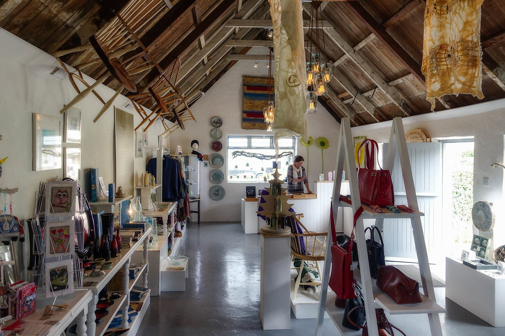

Cross Atlantic Productions was founded in 2015 to breathe life through art into the smaller villages along the northern coast of the Dingle Peninsula. Our original project involved converting a former Castlegregory bed and breakfast, a multi-bedroom cottage, into a beautiful open store featuring the work of talented Kerry-based artisans working in ceramics, jewellery, textiles, woodwork, glass and natural skincare.

We partnered with Original Kerry, the network for craft makers based in County Kerry, an umbrella brand supporting thirty-six craft professionals whose studios and workshops are located across the county, providing support and umbrella marketing to Kerry's craft-making enterprises through the Kerry Craft Trail, pop-up shops, craft fairs and markets, design showcases and trade shows, and giving visitors the chance to bring home an original gift, bought directly from the maker.
The success of the Original Kerry Shop in Castlegregory encouraged us to rent a prime location in Dingle, where the Original Kerry Shop thrives today, offering the finest collection of Kerry-made artisanal products while supporting 26 individual artisans throughout the Kingdom.
With our focus on the life of the smaller villages, we are dedicating our revenues from the Dingle store to fund the annual Classical Sessions music festival in Castlegregory and Brandon/Cloghane, and will be undertaking further artistic and theatrical projects along Dingle's north coast in future years. We welcome your support through purchases at the Original Kerry store next to the Spar in Dingle, or through your generous contributions at our events. All donations are split equally among the musicians, your generosity helps attract the world's finest musical talent to the world's most beautiful coastal villages.
We salute and appreciate our artistic directors, Nathan Meltzer, Hannah Ishizaki, Patrick Moriarty, and Martin Moriarty for their dedication to launching this ambitious and rewarding festival. We would also like to thank the artisans of Original Kerry, who quite literally built the festival's foundations with their bare hands. And thanks to violinist Mira Wang and to cellist Jan Vogler (Artistic Director of the Moritzburg and Dresden Music Festivals) for their inspiration and advice.
T. J. O’Connor & Associates have sponsored the hire of the pianos for the 2026 festival, without which a piano quintet, two piano trios and a Schumann finale would simply not be possible. Founded in 1937 and based in Sandyford, Dublin, they are among Ireland’s longest-established consulting civil and structural engineers, with work ranging from the Ringsend Wastewater Treatment Plant, which serves some sixty per cent of the country’s population, to Dundrum Town Centre and the radiation oncology centres in Cork and Galway. They were the first firm in Ireland certified to the international BIM standard I.S. EN ISO 19650, and are signatories to the Pledge to Net Zero. We are grateful that a practice of that standing should turn its attention to a handful of concerts on the Dingle Peninsula.